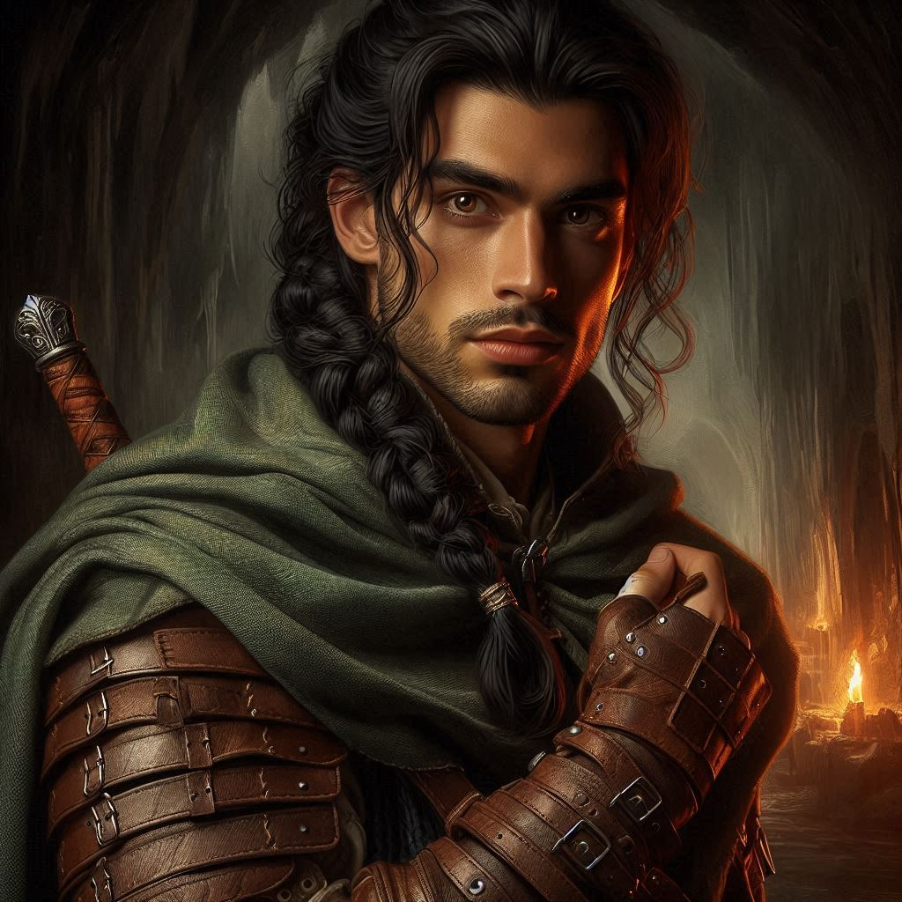
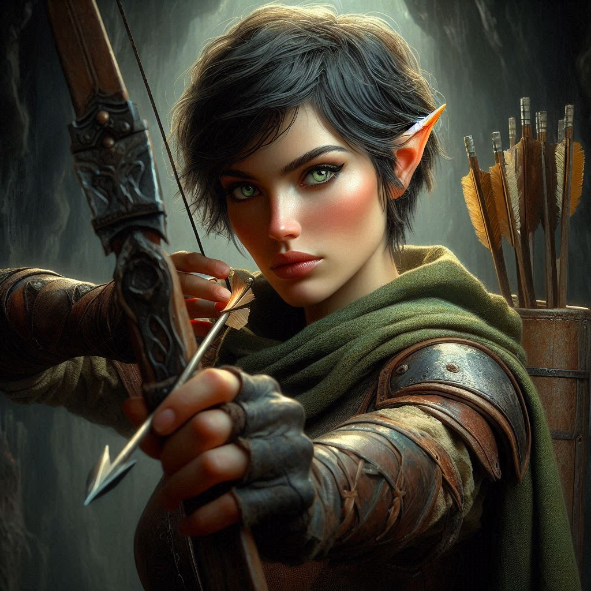

The Oath and the Ring
You take the ring and hold it up. “As a ranger of Belladonna, I take this royal signet as an emblem of your power and your oath of death before dishonor.”
“Death before dishonor,” Hawthorn swears.
In the Kingdom of Yew, an oath sworn is an oath kept. Hawthorn has not been completely transparent with you so far, but her royal promise gives you some hope that she will not betray you further.
You glance at Elias as the three of you continue through the twisting tunnels of Hemlock Falls. His expression is tight, his gaze flicking toward Princess Hawthorn every so often, suspicion simmering just beneath the surface. You can’t blame him. Trusting her, after all the lies and secrets, doesn’t come easily to you either.
Still, you need each other. The deeper you travel, the clearer that becomes. Dark forces stir in the caverns—shadows that seem to move on their own, whispers in a language older than you can comprehend. The walls are slick with moisture, but as your torch light flickers over the jagged stone, you notice strange markings etched into the rock. Symbols, ancient and foreboding, that make your skin crawl just to look at.
“What do they mean?” you murmur, running your fingers along the carvings. They seem to pulse with an eerie energy, as if alive.
Princess Hawthorn steps up beside you, her eyes scanning the symbols with a mixture of curiosity and dread. “I’ve seen these before,” she says softly, her voice barely above a whisper. “They’re wards. Powerful ones. They were used to guard treasures and... other things. Darker things.”
Elias shifts uncomfortably, his hand tightening on the hilt of his sword. “Other things?”
The princess nods, but her gaze remains fixed on the symbols. “If Jorsh is down here, he’s already broken through the first line of protection. Whatever these wards were guarding, it wasn’t just treasure.”
You exchange a glance with Elias, the unspoken understanding passing between you. This mission is bigger than just capturing Jorsh now. There are forces at play here that neither of you fully understand.
The three of you move cautiously through the tunnel, the weight of the mission pressing down on you. The air grows colder, more oppressive, as if the cavern itself is trying to swallow you whole. You tighten your grip on your bow, every sense on high alert.
Ahead, the tunnel opens into a vast chamber, the walls lined with more of the ominous symbols. At the far end, you spot something glinting in the torchlight—a massive iron door, chained shut and sealed with a heavy lock. But it’s not the door that makes your breath catch.
It’s the figure standing in front of it.
Jorsh.
His back is to you, but even from this distance, you can feel the dark magic radiating off him like a storm about to break. His hands move in slow, deliberate gestures, tracing the air as he mutters an incantation under his breath. He’s trying to break the final ward, the last line of defense between him and whatever lies beyond that door.
Without thinking, you start to step forward, but Elias catches your arm, pulling you back. “Wait,” he hisses, his voice urgent. “We need a plan.”
You glance at him, then at Hawthorn, who watches Jorsh with a mix of fear and something else—something more personal. Her feelings for him are still tangled, and it mirrors the knot tightening in your chest. Jorsh may be a threat, but he’s also a part of your past, a part of you.
But this isn’t the time for second-guessing. You’ve come too far.
“We can’t let him open that door,” you whisper, your gaze shifting between your companions. “Whatever’s inside... it could be worse than anything we’ve seen.”
Elias nods, his jaw clenched. “We need to stop him, together.”
It’s the word together that gives you pause. You wanted to do this mission solo. You wanted to prove that you were ready to do this on your own. But the truth is, you can’t do this alone. You could probably take Jorsh into custody by yourself, besting his magic with your bow and sword. But you don’t trust your heart. Not where Jorsh is concerned. You need Elias. You need Hawthorn.
“Alright,” you say finally, your voice steadying as you glance between them. “We do this as a team.”
For a moment, you catch Hawthorn’s eye, and there’s something in her expression—a flicker of warmth, of admiration even. It’s subtle, but it’s there. Despite everything, she trusts you. And something inside you softens, if only for a second.
But you push the thought aside. This is about the mission.
You draw your bow, notching an arrow and signaling to Elias. He readies his sword, stepping forward with cautious precision. Hawthorn stands behind you, her fingers already weaving a spell, her magic crackling in the air around you. The three of you move as one, a silent force advancing toward the man who was once your friend.
When you step into the chamber, Jorsh’s head snaps up. His eyes, once familiar, now gleam with something dark and dangerous. His lips curl into a sneer.
“Kira,” he says, his voice echoing through the chamber. “I knew you’d come.”
The words send a shiver down your spine. This isn’t the Jorsh you knew—the boy who made you laugh, who shared your dreams of adventure. This is someone else. Someone corrupted by power and greed.
You steady your aim, heart pounding. “Step away from the door, Jorsh. It doesn’t have to end like this.”
He laughs, the sound cold and hollow. “You still think you can stop me? After everything?”
Your grip tightens on the bowstring. “I don’t want to fight you.”
“And yet, here we are.” His eyes flick to Elias and Hawthorn, standing at your side. “You’ve brought friends. How quaint.”
You can feel the tension heavy in the air, the moment poised on the edge of violence. There’s no turning back now. Whatever happens next will determine the fate of everything.
Jorsh raises his hand, the dark magic swirling around him in a deadly storm. “If you want to stop me, Kira,” he says, his voice low and dangerous, “then you’ll have to kill me.”
The choice is yours.